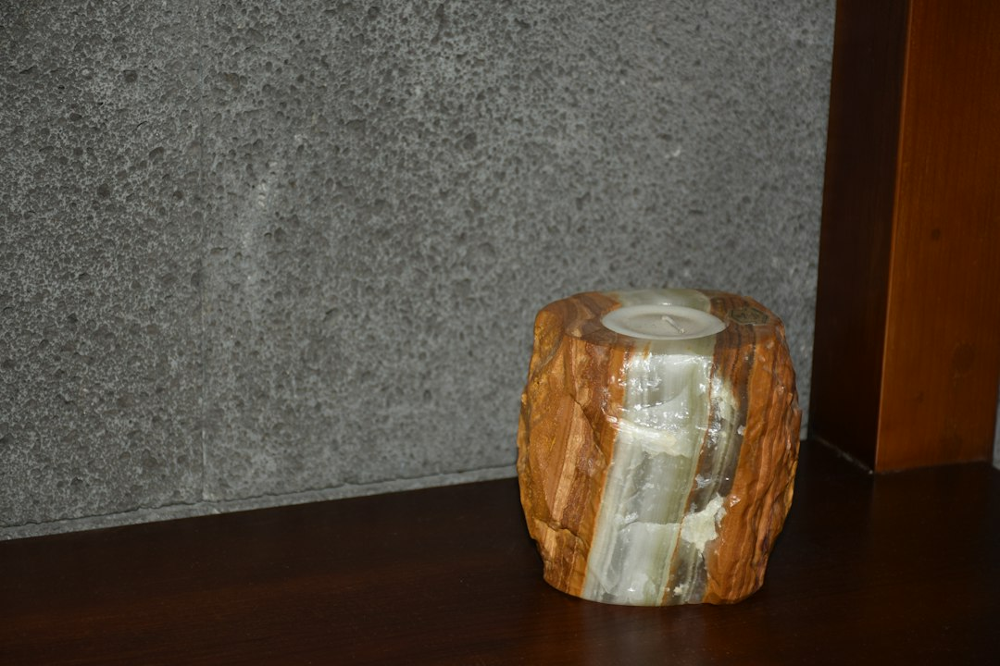

Automazione Digitale con Eternia: Il Futuro delle Onoranze Funebri e Servizi Memoriali Pet

Automazione Digitale nelle Onoranze Funebri e Servizi Memoriali Pet: Il Vantaggio Competitivo di Eternia
- Il divario tra gestione tradizionale e soluzioni digitali influisce profondamente sull’efficienza operativa e la soddisfazione clienti.
- I metodi manuali generano perdite economiche e limitano la raccolta solenne di condoglianze, penalizzando l’immagine aziendale.
- Eternia introduce portali memoriali digitali con funzionalità AI, QR Code, mappa GPS e libro ricordi interattivo, rivoluzionando il settore con un’offerta white-label competitiva.
Analisi Approfondita della Notizia e delle Implicazioni Operative
Nel settore delle onoranze funebri, delle case funerarie e dei servizi memoriali dedicati agli animali domestici, la crescente digitalizzazione sta determinando un netto divario competitivo tra chi utilizza ancora metodologie manuali e chi implementa soluzioni automatizzate. La notizia del momento riguarda l’innovazione tecnologica che rivoluziona i tradizionali necrologi cartacei, spesso costosi, poco duraturi e difficili da distribuire in modo efficiente.
Le aziende che persistono nell'approccio analogico affrontano oggi la sfida di coniugare il rispetto e la solennità del ricordo con le aspettative moderne di reperibilità, personalizzazione e interattività. La soluzione tecnologica emerge dalla necessità di preservare la memoria dei defunti con strumenti digitali avanzati, integrati nell’esperienza del cliente, rispettando al contempo la sensibilità del settore.
Conseguenze e Costi di Non Agire
L’assenza di digitalizzazione comporta gravi complicazioni operative e organizzative. I ricordini cartacei sono destinati facilmente a perdersi o danneggiarsi, causando insoddisfazione nei familiari e riducendo la percezione di professionalità.
I necrologi tradizionali impongono spese ricorrenti elevate per stampa e distribuzione, con scarsa capacità di offrire informazioni aggiuntive o multimediali. Inoltre, la raccolta delle condoglianze avviene in modo frammentato e poco solenne, compromettendo l’esperienza empatica e commemorativa che il servizio dovrebbe garantire.
Infine, questa inefficienza si traduce in un rallentamento delle operazioni e in una perdita competitiva evidente: i clienti oggi cercano servizi più integrati, digitali e immediatamente fruibili, aspetti che gli strumenti tradizionali non supportano.
Come Eternia Risolve il Problema Operativo
Eternia di RM Studio rappresenta la soluzione tecnologica ideale, progettata specificamente per titolari di onoranze funebri, case funerarie e servizi memoriali pet. La piattaforma consente di creare portali memoriali digitali d’autore, con marchio personalizzato in modalità white-label, che contribuiscono a valorizzare il servizio offerto in modo moderno ed elegante.
La chiave dell’innovazione risiede in funzionalità rivoluzionarie quali il QR Code stampabile su urne e ricordini, che indirizza direttamente al portale digitale completo, offrendo una soluzione definitiva ai problemi di perdita o smarrimento dei materiali cartacei.
La presenza di una mappa GPS facilita il raggiungimento delle sedi delle cerimonie, mentre il Libro dei Ricordi interattivo permette ai familiari e amici di lasciare messaggi commoventi e di condividere momenti in maniera più partecipativa e solenne.
Inoltre, i necrologi AI in 1-click alleggeriscono notevolmente il lavoro manuale, consentendo di generare testi impeccabili in pochi secondi. La reperibilità vocale AI 24/7 assicura un’assistenza continua e personalizzata, punto di riferimento immediato per utenti e clienti.
| Gestione Tradizionale | Con Eternia |
|---|---|
| Necrologi cartacei con spese elevate e limitata durata | Necrologi AI digitali automatici, personalizzabili e white-label |
| Ricordini cartacei facilmente persi o danneggiati | Ricordini con QR Code unico e portale digitale integrato |
| Difficoltà nella raccolta e gestione solenne delle condoglianze | Libro dei Ricordi interattivo con messaggi e multimedia |
| Nessun supporto AI per assistenza e generazione testi | Reperibilità AI vocale H24 e necrologi generati in 1-click |
| Limitata tracciabilità e visibilità degli eventi | Mappa GPS integrata per facile fruizione delle cerimonie |
💡 Ti è stato utile questo approfondimento?
Condividilo con un collega o un amico del settore Titolari di Onoranze Funebri, Case Funerarie e Servizi Memoriali Pet a cui potrebbe interessare!
FAQ - Domande Frequenti per Professionisti del Settore
1. Eternia può essere personalizzato con il brand della mia agenzia?
Assolutamente sì. Eternia offre un servizio white-label che permette di inserire il marchio e personalizzare ogni portale memoriale secondo l’identità visiva della tua azienda.
2. Come funziona il QR Code sui ricordini e urne?
Il QR Code integrato è unico e conduce direttamente al portale memoriale digitale, eliminando il rischio di perdere il ricordo o le informazioni importanti relative alla cerimonia.
3. È necessario avere competenze tecniche per utilizzare Eternia?
No, la piattaforma Eternia è stata ideata per essere user-friendly, con generazione AI automatica dei necrologi e supporto continuo, rendendo il processo accessibile a tutti.
Inizia Subito
Agency Hub B2B a €690 per 10 Cerimonie White-Label personalizzate col brand dell'agenzia.
Fonti Ufficiali e Risorse Esterne
Scopri l'Intelligenza Artificiale per la tua attività
Ottimizza i processi e aumenta le vendite con le soluzioni B2B di RM Studio.
Scopri Eternia